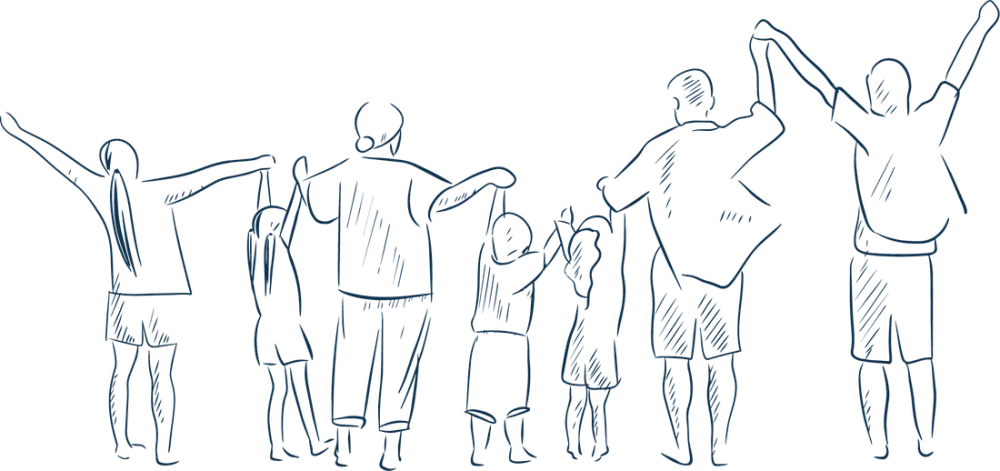

Wat u opbouwt, draagt meer dan waarde alleen.
Het vertelt een verhaal van ondernemerschap, verantwoordelijkheid en toekomstvisie.

Vermogensarchitectuur
We analyseren de volledige samenstelling van uw vermogen en brengen uw privévermogen, ondernemingsbelangen, roerende investeringen en vastgoed samen in één helder overzicht. Vanuit uw persoonlijke en familiale doelstellingen ontwikkelen we een doordachte vermogensstructuur waarin financiële, juridische en fiscale aspecten zorgvuldig op elkaar worden afgestemd. Daarbij besteden we ook aandacht aan uw financiële toekomst, pensioenplanning en het inkomen dat uw vermogen op langere termijn moet genereren.
Vermogensmonitoring
We volgen de evolutie van uw vermogen nauwgezet op en consolideren de informatie van banken, vermogensbeheerders en andere betrokken partijen. Daarbij bewaken we onder meer rendement, risico, kosten, spreiding en de samenhang tussen uw verschillende beleggingen. Zo beschikt u steeds over een transparant totaalbeeld en kunnen we uw vermogen tijdig bijsturen wanneer uw behoeften, de marktomstandigheden of de regelgeving veranderen.
Successie- en generatieplanning
We begeleiden de doordachte overdracht van vermogen, onderneming en zeggenschap naar de volgende generatie. Samen bepalen we wat u aan wie wilt overdragen en toetsen we dit aan het erfrecht en uw persoonlijke en familiale wensen. We adviseren over schenkingen en erfbelasting, begeleiden de praktische uitwerking en bereiden de volgende generatie voor door verantwoordelijkheid, inzicht en kennis stapsgewijs over te dragen. Zo werken we aan een juridisch en fiscaal onderbouwde regeling die zowel de continuïteit als de familiale harmonie bevordert.
Vastgoedplanning
We bekijken uw vastgoedportefeuille als een integraal onderdeel van uw totale vermogen. Bij een aankoop onderzoeken we welke financiële en fiscale structuur het best aansluit bij uw situatie, bijvoorbeeld privé, via een vennootschap of samen met de volgende generatie. We begeleiden u desgewenst ook bij de beoordeling van vastgoedprojecten en bij de aanvraag en vergelijking van kredieten. Daarbij houden we steeds rekening met rendement, risico, fiscaliteit, overdraagbaarheid en uw doelstellingen op lange termijn.
Vertrouwen begint met een gesprek.
We nemen graag de tijd om uw wereld te begrijpen en te bekijken waar we kunnen begeleiden.
Ontdek ook: uw onderneming